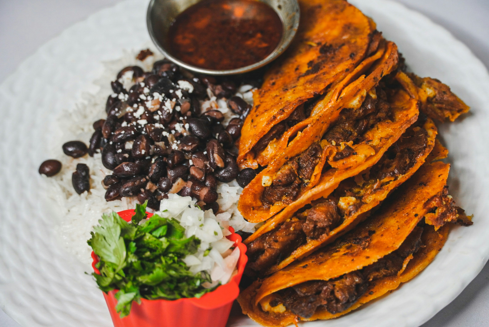
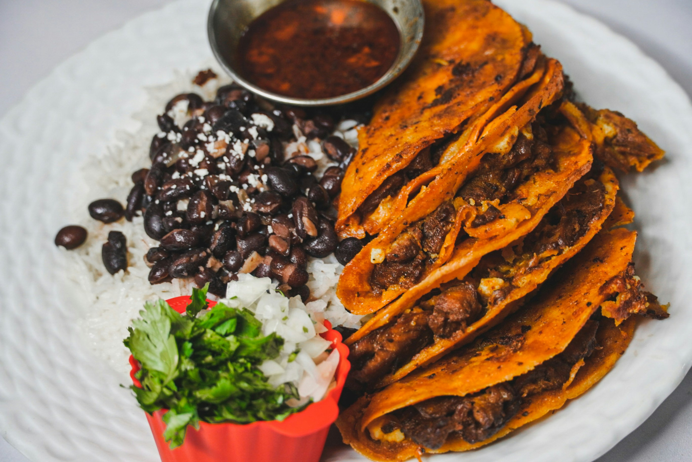

✨ Latinos bakery – Business Insights
Project Overview
Latinos is a brand-forward website for a Colombian bakery & restaurant in Calgary. It showcases the menu, story, and products with appetizing, full-bleed imagery and clear calls-to-action that drive visitors to view the menu, get directions, and place orders. The goal: increase foot traffic and online conversions while keeping updates simple for non-technical staff.
Target Audience
- Local families, students, and foodies looking for authentic Latin flavors
- The Latin community seeking familiar, trusted dishes
- Nearby shoppers searching for hours, location, and quick ordering
 

Tech Stack
Next.js, React.js, Tailwind CSS, next/image, Google Fonts (Baloo 2), Vercel (hosting/CI), GitHub Roadmap integrations: Order links (Uber Eats/DoorDash) or Stripe checkout, simple CMS (Sanity/Contentful) for menu/content edits
Business Problem
Independent restaurants often struggle with:
- Outdated or non-existent websites; menus live only as PDFs or social posts
- Phone-only orders and inquiries (hours, address, pricing) → high admin load
- Inconsistent branding and slow mobile experiences that hurt trust and SEO
How the Website Solves These Problems
Online Menu & CTAs
- Clean, scannable menu with “Explore our menu” and Order CTAs that funnel to ordering/delivery links.
Location, Hours & Map
- A prominent map banner and contact section reduce “Where are you/When are you open?” calls.
Mobile-First Performance
- Optimized images (next/image) and responsive layout ensure fast loads and a smooth mobile UX.
Trust-Building Design
- Warm navy + amber palette, modern typography (Baloo 2), and story-driven “About us” section increase credibility.
Owner-Friendly Updates
- Optional CMS lets staff edit dishes, prices, and promos without developer help.
Key Features
- Full-bleed hero with persuasive headline & CTA
- About section (image + copy) to communicate authenticity and heritage
- Product/gallery grid for best sellers and seasonal items
- Deep-blue banner highlighting location and community message
- Footer with social links and legal pages; accessible, consistent UI components
Business Insights
- –25–40% calls asking for hours/location after adding clear headers + map banner
- +15–25% click-through to “Order” / “Directions” from optimized CTAs and layout
- –20–30% bounce rate on mobile from image optimization and faster LCP
- Event tracking (planned): Menu CTA clicks, Order link clicks, Directions taps → weekly insights for owners
Result
The modern, responsive site improves booking/ordering efficiency, strengthens brand trust, and increases discoverability in local search. Clear CTAs and fast performance help convert browsing intent into store visits and online orders.